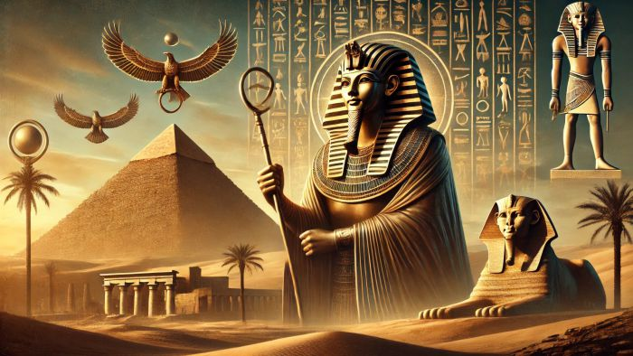

Peradaban Mesir Kuno yang dimulai sekitar tahun 3100 SM adalah peradaban agraris yang kehidupan ekonominya sangat bergantung pada siklus alami Sungai Nil. Masyarakatnya membagi waktu dalam tiga musim utama yang digerakkan oleh alam, yaitu musim banjir "Akhet", musim tanam "Peret" , dan musim panen "Shemu". Ketika banjir surut, ladang mereka tertutupi oleh lumpur hitam yang sangat subur. Di atas tanah inilah mereka menanam gandum, barley, serta rami. Untuk menunjang ketahanan pangan, mereka menjinakkan air dengan membangun bendungan raksasa, waduk penyimpanan, serta saluran irigasi buatan guna mengalirkan air ke lahan yang jauh dari sungai.
Dalam bidang komunikasi, bangsa Mesir Kuno menorehkan sejarah besar dengan menciptakan salah satu sistem tulisan tertua di dunia, yaitu aksara Hieroglif. Aksara ini berbentuk kombinasi antara gambar, simbol formal, dan tanda fonetik yang dianggap sakral. Untuk keperluan yang sifatnya suci, seperti ritual keagamaan, keputusan raja, dan pencatatan sejarah dinasti, Hieroglif dipahat secara permanen pada dinding batu piramida, kuil, dan monumen obelisk. Namun, untuk urusan administrasi pemerintahan dan perdagangan sehari-hari, para juru tulis menggunakan variasi tulisan mengalir yang lebih cepat bernama Hieratik dan Demotik, yang ditulis menggunakan tinta hitam atau merah di atas gulungan lembaran lembu atau tanaman Papirus.
Struktur sosial kemasyarakatan diatur dalam sistem hierarki kaku berbentuk piramida. Pemimpin absolut tertinggi adalah seorang raja yang diberi gelar Firaun (Pharaoh). Firaun bukan sekadar kepala pemerintahan atau panglima militer, melainkan dianggap sebagai perwujudan dewa di dunia yang memegang kendali penuh atas hukum dan seluruh tanah Mesir. Tepat di bawah Firaun, terdapat kelompok elit yang terdiri dari wazir (perdana menteri), keluarga bangsawan, dan para pendeta tinggi kuil. Lapangan sosial tengah diisi oleh juru tulis, tentara, dan pengrajin terampil. Sementara itu, lapisan paling bawah yang merupakan mayoritas populasi diisi oleh buruh tani, pekerja kasar, serta budak.
Meski hidup ribuan tahun lalu, bangsa Mesir Kuno memiliki pemahaman luar biasa di bidang matematika, geometri, astronomi, dan teknik sipil. Mereka berhasil menciptakan kalender matahari dengan sistem 365 hari dalam setahun untuk memprediksi datangnya banjir Sungai Nil. Keunggulan arsitektur mereka terbukti lewat pembangunan monumen megalitik yang presisi, seperti Piramida Agung Giza dan patung Sphinx. Proses pemotongan, pengangkutan, hingga penyusunan jutaan balok batu seberat berton-ton membuktikan adanya manajemen tenaga kerja masif serta penguasaan alat mekanik sederhana seperti pengungkit, roda katrol, dan bidang miring.
Sistem spiritual mereka bersifat politeisme, artinya mereka memuja ratusan dewa-dewi yang merepresentasikan kekuatan alam, seperti Dewa Ra (Matahari), Anubis (Kematian), dan Osiris (Alam Baka). Konsep keagamaan mereka yang paling sentral adalah kepercayaan mendalam terhadap adanya kehidupan setelah kematian (afterlife). Mereka percaya bahwa jiwa seseorang (Ka dan Ba) hanya bisa hidup abadi jika tubuh fisiknya tetap utuh di dunia. Kepercayaan inilah yang melahirkan ilmu medis kuno berupa proses pengawetan jenazah atau Mummifikasi, di mana organ dalam tubuh dikeluarkan, daging dibalur garam natron, lalu dibungkus kain linen sebelum akhirnya dimakamkan bersama harta benda berharga.